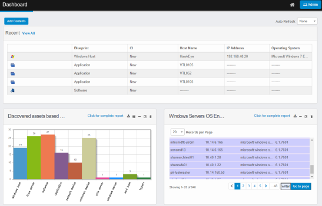

Discovery Scan Dashboard
The Dashboard contains a list of all the recent scans and any reports that have been added to the window.
| 1. | In the navigation pane, select Discovery Scan > Dashboard. The Dashboard displays. |

| 2. | To add more information to the window, click Add Contents. |
| 3. | To see all records, click View All. The Discovered Items window displays. |
| 4. | To view the details for a specific record, click the line item in the Recent scans list. The applicable Discovered Items window displays. |
| 5. | To change the information displayed on the dashboard, see Customize the Discovery Scan Dashboard. |
Other Functions and Page Elements